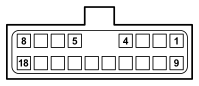

D001B FRONT/DASHBOARD COUPLING (FRONT)
- Path
- Electrical equipment > 3 CONNECTORS > D INTERMEDIATE COUPLINGS > D001 FRONT/DASHBOARD COUPLING > D001B FRONT/DASHBOARD COUPLING (FRONT)
- Kind
- connector pinout (pin -> wire colour -> other end)
- Applies to
- engines: 2.8 JTD 8V; all production periods; only with equipment: Automatic Transmission
- Interactive page
- https://sloeber94.github.io/elrnDB-fDct/en/#/244002596
Applies to: engines: 2.8 JTD 8V; all production periods; only with equipment: Automatic Transmission

Wiring | Colour |
|---|---|
BIANCO (white) |
Pin | Cable | Destination | |||
|---|---|---|---|---|---|
Sec.. | Colour | Node | Connect. | Pin | |
Topics linked from this page (1)
Topics that link to this page (38)
- B001C JUNCTION UNIT (FRONT)
- B001C JUNCTION UNIT (FRONT)
- B002C JUNCTION UNIT UNDER DASHBOARD (DASHBOARD)
- D004A FRONT/ENGINE COUPLING (FRONT)
- D004A FRONT/ENGINE COUPLING (FRONT)
- D004A FRONT/ENGINE COUPLING (FRONT)
- D004A FRONT/ENGINE COUPLING (FRONT)
- D004A FRONT/ENGINE COUPLING (FRONT)
- D004A FRONT/ENGINE COUPLING (FRONT)
- D022 COUPLING FOR ADDITIONAL HEATER (FRONT)
- D022 COUPLING FOR ADDITIONAL HEATER (FRONT)
- D022 COUPLING FOR ADDITIONAL HEATER (FRONT)
- D022 COUPLING FOR ADDITIONAL HEATER (FRONT)
- D022 COUPLING FOR ADDITIONAL HEATER (FRONT)
- D022 COUPLING FOR ADDITIONAL HEATER (FRONT)
- D097A SHORT CIRCUITING COUPLING (DASHBOARD)
- D097B SHORT CIRCUITING COUPLING (DASHBOARD)
- D097C SHORT CIRCUITING COUPLING (DASHBOARD)
- D186A FRONT/ABS COUPLING (FRONT)
- D186C FRONT/ABS COUPLING (FRONT)
- D186C FRONT/ABS COUPLING (FRONT)
- D186C FRONT/ABS COUPLING (FRONT)
- D186C FRONT/ABS COUPLING (FRONT)
- E050B INSTRUMENT PANEL (DASHBOARD)
- E050C INSTRUMENT PANEL (DASHBOARD)
- E050E INSTRUMENT PANEL (DASHBOARD)
- H037 GEAR CONTROLS (FRONT)
- H090A SWITCH CONTROL PANEL (DASHBOARD)
- I030 BRAKE PEDAL SWITCH (DASHBOARD)
- K042 AIR TEMPERATURE SENSOR (FRONT)
- K042 AIR TEMPERATURE SENSOR (FRONT)
- K042 AIR TEMPERATURE SENSOR (FRONT)
- K042 AIR TEMPERATURE SENSOR (FRONT)
- M030A ALARM CONTROL UNIT (FRONT)
- M055 AUTOMATIC TRANSMISSION CONTROL UNIT (FRONT)
- M055 AUTOMATIC TRANSMISSION CONTROL UNIT (FRONT)
- N025 HEADLAMP WASHER PUMP MOTOR (FRONT)
- R010 MULTIPLE TESTER CONNECTION (DASHBOARD)